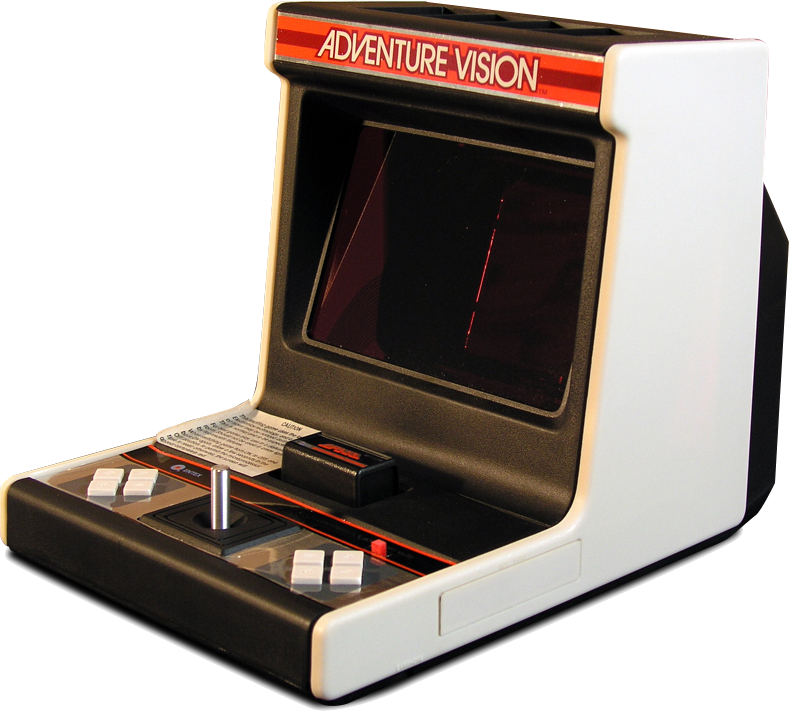
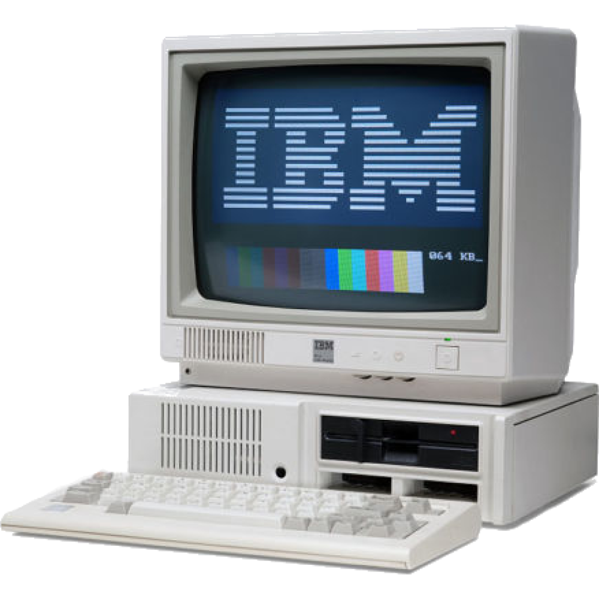

Goals
URGENT: Big Smoke wants a Number 9
2/25/2021
"Can I have a numba nine" - Big Smoke
POG
2/24/2021
I have added a lot in the last few days. I have added almost all 2019-(early) 2020 email images. I have added many images and files from my google drive. I have found and added images in the chrome drive background backup folder. I have added DS, N64, and GBA emulation. Fonts have been added to downloads. TBWE5 won the best website ever award. The Ji PNG language page has been added. Links to my and AkiArc's (Alaric's) YouTube channels have been added. Alaric's 'virus' has been added. SAOBR related audio has been added. Mafia Boss Chansey trailers have been added. We are now selling "friendliness pellets" and elastic bands. CompUSA group images have been added to SAOBR cinimatic universe page. And finally, the 3D model of Waldoheadman has been added.
PS5 Emulation?!?!?!?!?
2/18/2021

After hours of work, I have finally created a web based PS5 emulator. It's laggy and sort of glitchy, but most games are playable. I recommend that you check it out here.
￣\_(”ノ)_/￣
Email Images Added
2/16/2021

I have copied most images from old emails in my old school gmail acount and have uploaded them to this website. There are about 15 of them. Can you find the all?
Emulation Update
2/14/2021
I have added a siginfigant amount of games to the emulation pages. I have also added many systems, including the Sega 32x, Entex Adventure vision, Colecovision, arcade, Epoch Game Pocket Computer, and the Gameboy Color. I have also started to work with an Adobe Flash emulator, so flash games might make a return to this website!
Major Update
2/13/2021

I have finished development on the 3D and Audio pages! Audio has been removed from downloads and many audio files from IST projects have been uploaded. I have added many images to main page 3 and prephotoshop. I am now selling Gamestop Stonks and Rick Rolls in the shop! I have started using google drive to host large video files, so on the videos page I added a section called non-local, which contains several videos that were not on this website and were not on my youtube channel.
Online Emulation Released!
2/12/2021
I have finally released a working online emulation pages! I will be adding more systems and games over time. In the coming days, I will also rewrite the 3D, audio, and games pages to use a similar system to the game switching system the emulation pages are using. A few emulated games I added are Doom, Sonic (1-3), Tetris(es), ET (Game of the Year), and Pacman(s).
Rare Image
2/11/2021

There is a giant mircowave in the basement of Cheney Tech that "cooks" all the food there! It can microwave metal and ruin the texture of chicken!
This just sums up 2020
2/10/2021

I found this and it just sums up 2020.
Good News
1/30/2021

The games and emulation sections of this website will now be supported! I will be adding such amazing games such as slope and ET (Atari 2600)! Also I have started to work on a 3D viewing page, so soon this website will have more 3D models than just Fatman TM with logo!
Legal Emuuuuuuuuuuuuuuu! (and Dave)
1/28/2021

This dou is called Legal Emuuuuuuuu!!!! (and Dave). Those of you who claim it is Limu Emu (and Doug) will be sent to re education centers.
Special Announcement from Morshu
1/27/2021

I can't give credit,
Come back when you're a little
mmmmmmmmmmmmmmmmmmmmmmmmmmmmmmmmmmmmmmmmmmmm
richer.GBA Romhack
1/24/2021
I have created a GBA romhack and have added it to the downloads section of this website! A Game Boy Advance romhack is an edited version of a game. I created this romhack and themed it after Pokemon Go. I recommend that you try it, but if you don't want to AND as long as you don't care about spoilers, go here to see gameplay!
Mafia Boss Chansey
1/20/2021
Mafia Boss Chansey has legitimately taken control of this website. Rob has given control to Mafia Boss Chansey by his own free will. PLEASE HELP!
More Images
1/19/2021

I have added 17 new images to the website, all from my IST backgrounds folder.
Best Welcoming to a Website
1/18/2021

I found this while searching for information about an old computer company called Wang Computers. The unfortunately named company made word processing computers.
Online Emulation Halted
1/13/2021

Adobe flash player is dead. The emulator I was using for the emulation section no longer runs in browsers. I am halting the development of the emulation sections of this website and may be removing them in the future. I have found alternatives to flash, but they are laggy and cannot be hosted locally on this website. There is still hope for online emulation, even though it will take a lot longer than it would have.
A Horrible Day for the Internet
1/12/2021

Today is a sad day, for Adobe Flash Player is now dead. Adobe discontinued it and flash games will no longer run in browsers. This will effect the games page and the online emulation effort. They will most likely end as well. I will be taking down my 2020 April Fools prank site as well. See why they did this here. :(
Online Emulation Start
1/10/2021

I have started to work on my online emulator again. To learn more about emulators go here! I had started to work on one awhile ago, but stoped as it was too hard maintain. Now that I know some javascript, I decided to start it again.
Super American Online Bros - Remastered
1/9/2021

I have started to work on a new video game, Super American Online Bros - Remastered. The original Super American Online Bros is broken, it will not load correctly anymore, so I decided to scrap it, as it would take more effort to fix than it would take to recreate. Also since it was my first unity project, I did some things stupidly that I will avoid this time. If for some reason you want the assets I am using, you can download them on the Unity Assets page of the Gallery! New acronym for Super American Online Bros - Remastered = SAOBR
Sans Fight Animation!
1/4/2021

I have created a Sans fight animation here!
Audio does not work in Google if the page is reloaded or bookmarked! Use Microsoft Edge (Internet Explorer but edgy)
The start of 2021!?!?!?
1/1/2021

2020 was fun, right? Hopefully 2021 will be funnerer, with less coronavirus, murder hornets, toilet paper shortages, Australian wildfires, violent protests, mass quarantines, and very controversial elections!
Happy New Years! Festivus!
Yes, I am writing this at 12:20 AM 1/1/2021
End of 2020!?!?!?
12/31/2020

2020 was fun, right? We had coronavirus, murder hornets, toilet paper shortages, Australian wildfires, violent protests, mass quarantines, another very controversial election, and the release of TBWE5!
SANS!
12/30/2020

Papyrus will love the new font I added.
NYEH HEH HEH!
Festivus from Google
12/29/2020

I assumed that you celebrated THIS when I told you to celebrate the other Festivus!
Main Festivus Day
12/21/2020

It's that time of year again, it is time for (main) Festivus! No, I'm not talking about the Festivus from Seinfeld. I'm talking about Festivus, the one with the white pines, you know the one I may or may not have made up. To celebrate Festivus, you have to get a white pine tree and put it in your house. Throw away your Christmas tree. Merry Festivus to you all!
Update: Images
12/15/2020

I have added many images (mainly Mark TM or Notepad++). Go to the gallery section to check them out!
Done!
12/11/2020

This website is complete! Now you can play some old flash games! Or watch WIDE FATMAN! Or even download viruses!
Almost Done!
12/10/2020

This website is almost complete! Also you are is has been hacked by Sans.
Edit: TBWE5 Will be released tomorrow!
Gallery
12/9/2020

The gallery section has had massive improvements and is now almost complete. Also I have started to work with a 3D api, so Fatman will be on the website soon!
Fatman!
11/30/2020

Fatman is the best superhero to ever exist. His power is waddling. He can waddle at amazingly slow speeds!
TBWE5 in Development!
11/18/2020

Yes, TBWE5 will be ready soon. No more TBWE4.